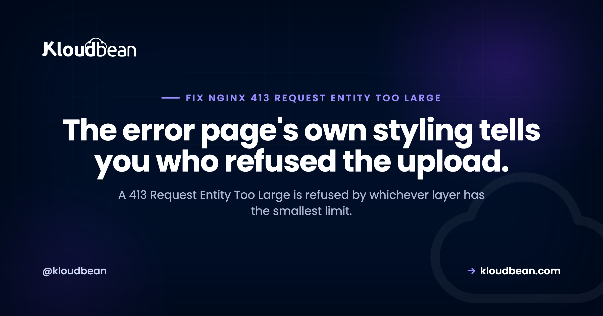
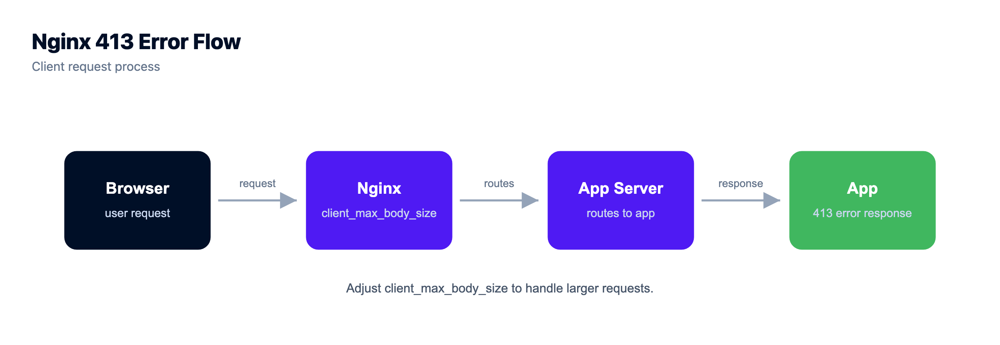
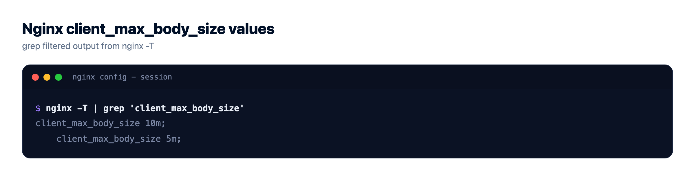
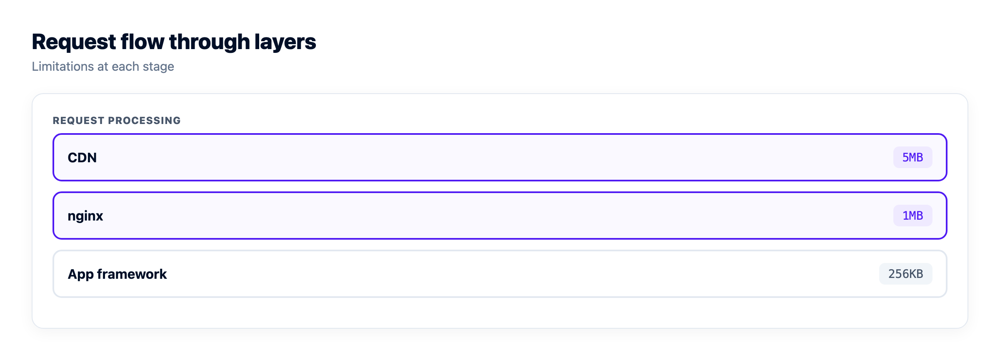

413 Request Entity Too Large in nginx: client_max_body_size, Buffers, and Timeouts

A 413 Request Entity Too Large is refused by whichever component in the path has the smallest limit, and that component is almost never the one you edit first. Look at the page you got back. If it's a bare white page with nginx printed at the bottom and none of your application's styling, then nginx refused the request before your app ever saw a byte of it. Which means the upload limit in your framework, the one you're about to raise, is not involved. That misdirection is why this error routinely eats an hour. This is the nginx side of it: the directive, where it belongs, which config file actually wins, and the buffer and timeout settings that show up right after you fix the size.
Set client_max_body_size to a value above your largest legitimate upload, then run nginx -t and reload. The catch is that a request body passes through several independent limits, at your CDN, at nginx, and inside your application framework, and the smallest one still wins. Raise the one that actually rejected you, then raise the next one it hands off to.
Read the error page before you read the docs
Every layer signs its own rejection, and that signature is the quickest diagnostic you have. Spend ten seconds on it.
An unstyled page with a plain heading and the word nginx in small text at the bottom is nginx's built-in error page. Your application did not generate that. It couldn't have: nginx read the request headers, saw a Content-Length above its own ceiling, and closed the conversation. A CDN-branded page means you never reached your own server at all. And a 413 that comes back shaped like your API's normal JSON errors, with your own field names in it, means the request got all the way through the proxy and your framework was the one that objected.
The log confirms it without ambiguity:
grep "client intended to send too large body" /var/log/nginx/error.log | tail -5If that line is there with a timestamp matching your attempt, stop editing application config. For the full layer-by-layer diagnosis across Apache, PHP, and the edge, there's a companion piece on 413 Content Too Large and finding the ceiling that rejected you. This page stays on nginx.

The nginx 413 fix: client_max_body_size and where it goes
One directive controls it. client_max_body_size sets the largest request body nginx will accept, and the nginx documentation gives its default as 1m. One megabyte. That's below a photo from any phone you'd buy today, which is most of the reason this error is so common. Confirm the default against your own version, since config shipped by a distro package or a control panel often overrides it before you arrive.
It's valid in three contexts, http, server, and location, and the narrowest one that covers your upload path is the right choice:
http {
# A conservative floor for everything.
client_max_body_size 2m;
server {
listen 443 ssl;
server_name app.example.com;
# Only the upload endpoint gets the larger ceiling.
location /api/uploads {
client_max_body_size 20M;
proxy_pass http://127.0.0.1:3000;
}
location / {
proxy_pass http://127.0.0.1:3000;
}
}
}The value takes a size suffix: 20M for megabytes, 2G for gigabytes, a bare number for bytes. Case doesn't matter, so 20m and 20M are the same thing.
client_max_body_size 0 disables the check completely. It's a real option and occasionally the right one on an internal service behind authentication, but treat it as a deliberate decision rather than a shortcut past the error. With no ceiling, any client that can reach the endpoint can stream an arbitrarily large body at you, which is a denial-of-service vector and a way to fill the disk that buffers it. If you can name your largest legitimate upload, set that number instead.
Which config file actually wins, and how to prove it
Here's where people lose the second half of that hour. They edit a file, reload, and nothing changes, because the value they set is being shadowed by a more specific one somewhere else. nginx doesn't merge these. A location block's value overrides its server block, which overrides http. So a global 100M means nothing if the location handling your upload declares 1m of its own.
Stop guessing and dump the config nginx has actually assembled from every include:
# Print the full resolved configuration, includes and all.
nginx -T | grep -n -B4 client_max_body_sizeThat -T is capital, and it's the single most useful nginx flag for this class of problem. Every occurrence, in context, in the order nginx resolved them. If you find three, the most specific one matching your request path is the one refusing you. Common places a surprise value hides: a vendor snippet in /etc/nginx/conf.d/, a control-panel-generated file under sites-enabled, or an include shared across several vhosts.
Validate, then reload, in that order
Never reload a config you haven't tested. A syntax error on reload can leave you with a proxy that won't come back, and turning a 413 into an outage is a bad trade.
# 1. Syntax check first.
sudo nginx -t
# expect: syntax is ok / test is successful
# 2. Reload without dropping in-flight connections.
sudo systemctl reload nginx
# or, equivalently
sudo nginx -s reloadReload is graceful: existing workers finish what they're serving while new ones pick up the new config. You don't need a restart for this, and a restart drops connections for no benefit. Then verify against the real endpoint rather than trusting the file:
# Make a body of a known size and post it.
dd if=/dev/zero of=/tmp/probe.bin bs=1M count=15
curl -s -o /dev/null -w '%{http_code}\n' -X POST \
-F "file=@/tmp/probe.bin" https://app.example.com/api/uploadsUse curl rather than a browser here. When nginx generates the 413 itself, the response carries none of the cross-origin headers your app would have added, so a browser reports it as a CORS failure and hides the real status from you. curl doesn't enforce cross-origin policy and shows you the number.

nginx is one ceiling out of several
Fix nginx and the next layer takes its turn. This is the part that makes 413 feel unfixable: it's not one setting failing repeatedly, it's a queue of independent limits, and each one has to be raised or the smallest still decides your real maximum. Work down the path in request order.
| Layer | Setting to raise | How you know it's the one |
|---|---|---|
| CDN or edge proxy | Provider body-size cap, plan dependent | Provider-branded error page, and nothing at all in your nginx access log for that request |
| nginx | client_max_body_size | Unstyled nginx error page, plus client intended to send too large body in the error log |
| Express | express.json({ limit }), and multer's limits.fileSize | An Express error, or multer's LIMIT_FILE_SIZE code, in your app log |
| PHP | upload_max_filesize and post_max_size together | PHP raises it, and $_POST can arrive empty rather than erroring cleanly |
| Django | DATA_UPLOAD_MAX_MEMORY_SIZE | A Django RequestDataTooBig traceback, rendered by your app |
| Your own validation | Whatever rule you wrote | The error is in your application's own shape, with your own wording |
Two notes on that table. PHP's pair genuinely has to move together, because an uploaded file travels inside the POST body, so post_max_size needs to be at least as large as upload_max_filesize plus room for the other form fields. And Express is stricter than people expect on JSON endpoints, which is a frequent surprise for APIs receiving base64 payloads. If your proxy chain includes a CDN, whether you need a CDN at all is worth a moment's thought, and edge error codes covers how to tell an edge rejection from an origin one.
Big bodies also hit buffers and timeouts
You raised the limit, the 15 MB test passed, and now a user on hotel wifi reports a failure that isn't a 413 at all. This is the second half of large-upload work, and it's less documented than the size directive.
nginx buffers a request body before handing it upstream. Small bodies sit in memory, governed by client_body_buffer_size; anything larger spills to a temporary file on disk under client_body_temp_path. That's usually fine, but it means large uploads consume disk, and if that filesystem fills, uploads start failing in ways that look nothing like a size problem. Worth knowing before you set a very high ceiling on a small volume.
Then there's patience. client_body_timeout governs how long nginx will wait between successive reads of the body, not the total transfer time, which is an important distinction: a slow but steady upload is fine, a stalled one is not. A client that goes quiet mid-body gets its request terminated. And once nginx does forward the body, proxy_read_timeout governs how long it waits for your application to respond, which matters when your handler is writing a large file or processing it inline. Exceed that and nginx returns a 504, not a 413.
location /api/uploads {
client_max_body_size 20M;
client_body_buffer_size 128k; # spill to disk above this
client_body_timeout 120s; # patience between body reads
proxy_read_timeout 120s; # patience for the app's response
proxy_pass http://127.0.0.1:3000;
}Both timeouts default to 60 seconds in current nginx releases, and both are worth confirming against your version rather than trusting a blog post, including this one. If your symptom is a timeout rather than a rejection, 504 Gateway Timeout is the one to read, and 502 Bad Gateway between nginx and Node covers the case where the upstream died mid-request instead.

Why raising the limit is often the wrong answer
An opinion, and it's the part of this I'd argue about. Raising client_max_body_size is a fix for forms that are slightly too big. A 6 MB scanned PDF against a 1m default, a batch JSON import that outgrew its endpoint, an avatar upload that nobody sized for modern cameras. Set a sane number, reload, done. That's a config bug with a config fix.
It is not an upload strategy. Past a few megabytes, every byte of a file you accept through your web server occupies a worker for the whole duration of the transfer, and gets buffered to disk on the way through. Ten people uploading video at once can starve a server that serves ordinary page traffic without breaking a sweat. The request is not doing computation, it's doing plumbing, and you're paying for it with the same worker pool that answers your homepage.
The anti-pattern to avoid is the one that feels like decisiveness: raising every limit in the chain to some very large number so the error goes away for good, and letting users stream multi-gigabyte bodies through the app process onto local disk. You've now built an endpoint where a handful of concurrent uploads can exhaust your workers and fill the filesystem, and the files land somewhere that a redeploy will wipe. The 413 was annoying. This is worse, and it fails later, under load, when you're not watching.
Where the bytes should go instead
For files that are genuinely large, or frequent, or both, the durable answer is to keep them out of the request path entirely. Use a presigned upload. Your app receives a small request asking for permission, returns a time-limited signed URL, and the browser sends the file straight to object storage. Your server handles two small JSON exchanges instead of a long stream. The 413 question stops existing, because nothing large ever crosses your proxy.
// Server: issue a short-lived signed URL. No file touches this process.
import { S3Client, PutObjectCommand } from "@aws-sdk/client-s3";
import { getSignedUrl } from "@aws-sdk/s3-request-presigner";
const s3 = new S3Client({ endpoint: process.env.S3_ENDPOINT, region: "auto" });
app.post("/api/uploads/sign", async (req, res) => {
const url = await getSignedUrl(
s3,
new PutObjectCommand({ Bucket: process.env.S3_BUCKET, Key: req.body.key }),
{ expiresIn: 300 }
);
res.json({ url });
});// Browser: PUT straight to storage, never through nginx.
await fetch(signedUrl, { method: "PUT", body: file });This also quietly fixes a second problem that has nothing to do with 413. Files written to a server's local disk don't survive a redeploy, so any app storing uploads next to its own code is losing user data on every deployment, usually without noticing until someone asks where their invoice went. Object storage is the fix for both at once, which is why I reach for it earlier than most people do.
On Kloudbean this is the ordinary S3 flow rather than anything bespoke: the built-in object storage is S3-compatible with AWS SDK and CLI support, so the code above works unchanged, data transfer out isn't metered, and the server and stack underneath are managed. The object storage guide covers buckets and access control.
When not to bother: if your largest upload is a 4 MB profile image, presigned URLs are more machinery than the problem deserves. Raise the limit and get on with your day.
More on 413 Request Entity Too Large in nginx
For the proxy layer itself, nginx as a reverse proxy for Node covers the config this sits inside. For the neighbouring failures: 502 Bad Gateway when the upstream is gone, and 504 Gateway Timeout when it's too slow. For the status code across every layer rather than just nginx, 413 Content Too Large.
Read the log, fix it, ship again.
Build logs stream live in the console, deployment history keeps what happened, and the logs viewer separates app errors from web requests, so a failed start is a five-minute read rather than a guessing game.
- ✓ Live build logs
- ✓ Deployment history
- ✓ Logs viewer
- ✓ Managed process restarts
- ✓ Automatic backups
- ✓ Git deploy
FAQ
What does 413 Request Entity Too Large mean in nginx?
It means nginx read the request headers, saw a body larger than client_max_body_size allows, and refused the request without passing it upstream. Your application never ran, which is why changing an application-level upload limit has no effect. RFC 9110 now calls the status Content Too Large, but nginx and plenty of other software still print the older name.
What is the default client_max_body_size in nginx?
The nginx documentation gives the default as 1m, one megabyte, which is smaller than a photo from a current phone. Confirm it against your own version, because distro packages and control panels frequently set their own value in an included config file before you ever touch it.
Where should I put client_max_body_size?
It's valid in the http, server, and location contexts. Prefer the narrowest one that covers your upload endpoint, so the tighter default keeps protecting everything else. A value in a location block overrides the server block, which overrides http, and nginx does not merge them.
I raised client_max_body_size and still get a 413. Why?
Two usual reasons. Either a more specific block is overriding the value you edited, which nginx -T will show you in seconds, or nginx is now accepting the body and the next limit in the chain is rejecting it. Check whether the error page is still nginx's own or has changed to your application's shape.
Do I need to restart nginx or just reload it?
Reload. Run nginx -t first to catch syntax errors, then systemctl reload nginx. A reload lets existing workers finish their current requests while new workers pick up the new config, so nothing in flight gets dropped. A restart does the same job less gracefully.
Is it safe to set client_max_body_size to 0?
It disables the size check entirely, so treat it as a deliberate choice with a real cost rather than a way past the error. Without a ceiling, anyone who can reach the endpoint can stream an arbitrarily large body at you, which is a denial-of-service vector and a way to fill the disk that buffers it. Set a number that reflects your largest legitimate upload instead.
Why does a large upload return a 504 instead of a 413?
Because size wasn't the problem, patience was. If the body fits under your limit but arrives slowly or stalls, client_body_timeout can end the request. If nginx forwards the body and your handler takes too long to respond, proxy_read_timeout expires and nginx returns a 504. Both default to 60 seconds in current releases, and both are worth raising deliberately on upload endpoints.
What is the right way to handle very large file uploads?
Keep them out of your web server. Have your application issue a short-lived presigned URL and let the browser upload straight to object storage, so your server handles two small requests instead of streaming the whole file. That removes the 413 question entirely and stops uploads competing with page traffic for worker slots. For a 4 MB avatar it's overkill, so just raise the limit.